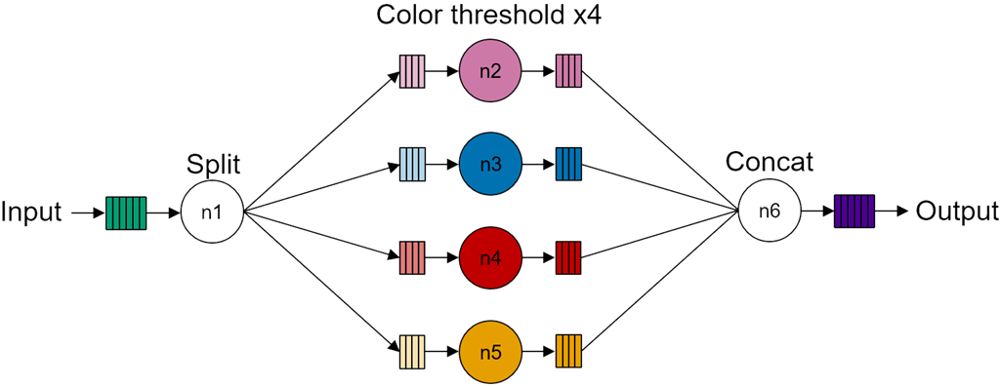

Scaling Data Parallel Applications to Multiple Compute Tiles#
Goals#
Explore data parallelism in the NPU by scaling compute to multiple compute tiles
Learn about the memory tile and its data movement capabilities
Learn how data can be partitioned and transferred to the NPU
References#
Embarrassingly Parallel Algorithms#
In the color threshold application, all the individual pixels in each of the three channels (red, green and blue) were processed individually. There are no dependencies between pixels, so each pixel can be processed independently, in any order, or even concurrently.
The computation performed by the color threshold algorithm is an example of what is referred to as an embarrassingly parallel algorithm. This is defined as:
an algorithm where little or no effort is needed to separate the problem into several parallel tasks. This is often the case where there is little or no dependency or need for communication between those parallel tasks, or for results between them.
This typically occurs when there is minimal inter-task dependency or a negligible need for communication between parallel tasks. In simple terms, these algorithms are “embarrassingly” easy to parallelize, hence the name. Such algorithms are wonderful because they can be parallelized easily, thereby speeding them up significantly, with minimal effort on our part. We will use this example to show how to use data level parallelism on the Ryzen AI NPU.
Data Parallelism#
To achieve higher performance, we can divide an application across multiple computing kernels, each operating on a different portion of the frame. This division of data processing among multiple compute units is known as data level parallelism or coarse-grained parallelism.
In this section, we will revisit the color threshold example used previously, but this time it will make use of all four compute tiles in a Ryzen AI NPU column to map independent instances of the same kernel. The input data will be evenly split across each kernel, meaning that each compute tile will process one quarter of the data in every frame.
For illustration purposes, each compute tile will process its data with slightly different threshold values. You will notice four horizontal stripes in the output frame. You can control the color threshold value for each compute tile as well as the type of threshold.
Data Movement in Memory Tiles#
Mapping software kernels to compute tiles is usually straightforward. Efficiently managing the movement of data within the NPU can require careful planning. As the designer, you must consider the available connections and data movement resources. The sole purpose of the memory tile is to provide more advanced data movement capabilities above what the compute and interface tiles can support.
Memory tiles are used where larger blocks of data need to be divided and distributed to compute tiles, where there is data reuse in different tiles in the NPU, and where data needs to be collected and recombined or reorganized in some way before it is streamed out of the array.
While the compute and interface tiles have 4 data movers, each memory tile has a total of 12 data movers for moving data to and from any other tiles. Six of these data movers are for input streams from any tiles, and six are for output streams to any tiles. This allows transfer of up to six streams of data in both directions to any tile simultaneously.
Data movers can also transfer data between neighboring memory tiles (to the east and west) in applications that span multiple NPU columns.
While the data movers in the compute and interface tiles can address data in 3-dimensions, the data movers in the memory tiles can index and address memory in 4-dimensions.
The animation below shows four examples of the movement of data in the memory tile. All of this data movement can happen simultaneously in a single memory tile.
|  | |||
| From interface tile to memory tile | From memory tile to compute tile | From compute tile to memory tile | From memory tile to interface tile |
The memory tile will be used in the example below to split the incoming data from the interface tile and stream it to separate compute tiles. It also collects and recombines results from the compute tiles, and streams the output to the interface tile.
Run the Scaled Color Threshold Application#
The code to run the scaled color threshold example is shown in the code cell below.
Execute the cell to load the application into the Ryzen AI NPU and to start the stream of data from your laptop webcam. Once running, the horizontal stripped ‘thresholded’ video output will be automatically displayed below the code cell.
The example has sixteen widgets. You can use these to control each threshold value independently for the red, blue and green channels in each of the stripes. The “type” widget allows you to select the threshold operation type. You can select:
BINARY - pixels with intensity values greater than the threshold are set to a specified maximum value (255), and pixels with intensity values less than or equal to the threshold are set to zero.
TRUNC (truncate) - if a pixel value is greater than the threshold, it is replaced with the threshold value; otherwise, it remains the same.
TOZERO - if a pixel value is less than the threshold, it is set to zero; otherwise, it remains the same.
The _INV variants of BINARY and TOZERO will invert the operation.
Experiment with the widgets to see how different threshold levels on the different channels affects the video output.
from npu.lib import ScaledColorThresholdVideoProcessing
app = ScaledColorThresholdVideoProcessing()
app.start()
Mapping the Application to the Ryzen AI NPU Column#
The dataflow graph and the corresponding mapping to the NPU column for the color threshold video processing pipeline are shown below.
|  |  |
The dataflow graph has four identical kernels (compute nodes n2 to n5) coupled via memory buffers to its input and output, the Split node is mapped to the memory tile which splits and distributes the data equally between each kernel. The Concat node is also mapped to the memory tile. It concatenates the results from each of the four kernels to reconstruct the image and generate the final output.
NPU Resource Utilization#
In all, the application uses:
1 interface tile
2 data movers
1 for stream input and 1 for stream output
1 memory tile
1 input data buffer
1 output data buffers
10 data movers
1 for stream input and 1 for stream output to the interface tile
4 for stream outputs to the compute tiles and 4 for stream inputs to the compute tiles
4 compute tiles
1 for each of the kernels
1 input and output memory buffer in the data memory of each tile
2 data movers in each tile
1 for stream input and 1 for stream output
Efficient Data Streaming for Array Processing#
Each compute tile has 64KB of data memory, divided into 8 banks. The memory tile has 512KB of data memory, divided into 16 banks. We will cover these memories in more details later. You may notice that this is not sufficient to store an entire frame of full HD video; for instance, approximately 8MB is needed for 1080p resolution (1920x1080), and around 4MB for 720p resolution (1280x720).
We saw that the algorithm processes data on a pixel-by-pixel basis and each compute kernel only requires one pixel at a time to generate an output pixel. This means that we do not need to transfer a full frame of data to the array to start processing a frame. While transferring single pixels to each node is possible, it would be an inefficient way to move data. Therefore, we must explore and implement more optimal data movement strategies.
Additionally, performing computations on single 8-bit or 32-bit pixels using the AI Engine processors in the compute tile would also be highly inefficient. AI Engines are vector processors capable of processing multiple pixels in parallel. Although, this notebook primarily focuses on data movement, with a discussion on AI Engine capabilities planned for later sections.
Leveraging tiling for parallelism#
A more efficient approach to data transfer is to split the image frame into chunks to match the memory structure of compute and memory tiles in a column. Data is then streamed to the tiles in smaller, manageable blocks. This method is called “tiling” and is a widely used technique, especially in GPU-based algorithms, to enhance parallelism, such as in matrix multiply.
In the following cells, we are going to calculate the minimum tiling necessary for different frame sizes.
# compute the size of 720p and 1080p frames including the alpha channel
import numpy as np
image_720p = np.empty(shape=(1280, 720, 4), dtype=np.uint8)
image_1080p = np.empty(shape=(1920, 1080, 4), dtype=np.uint8)
image_720p_size_kb = image_720p.size//1024
image_1080p_size_kb = image_1080p.size//1024
print(f' 720p frame size = {image_720p_size_kb}KB\n'\
f'1080p frame size = {image_1080p_size_kb}KB')
Let us focus on a 720p frame as we can extrapolate the results to a 1080p frame. The following will divide the frame size by the memory size for the compute tile data memory (64KB) and the memory tile memory (512KB). This will show the minimum number of blocks the image frame needs to be divided into so that it can be tiled and sent to each memory.
# compute the minimum number of tiles needed for 720p
print(f'Number of tiles using data memory = {image_720p_size_kb/64}\n'\
f'Number of tiles using memory tile = {image_720p_size_kb/512}')
When using the memory tile data memory (512KB), the frame must be divided and transferred as a minimum of 8 blocks. However, for practical data movement, we also need to allocate space in the compute tile local data memory banks, which have a size of 64KB each. Therefore, we require a minimum of 57 blocks to effectively manage data transfer to the compute tiles. Note that these numbers are the minimum theoretical values.
If we take a bank of the data memory (8KB) as the minimum granularity of data that we would like to move to a kernel, we can compute the number of tiles (blocks): \(3600KB/8KB = 450\). You can use more banks to allocate data, however there are other considerations:
Each processing kernel requires both an input and an output buffer, effectively halving the available memory for data storage.
To optimize data movement, this dataflow architecture uses ping-pong buffers (a concept that will be cover later). The use of ping-pong buffers increases throughput, but further reduces the available memory by half.
Based on these considerations, the maximum size we can allocate in data memory is 16KB, hence requiring 225 tiles (blocks) for a 720p image. In the case of 1080p, we need 507 tiles (blocks). These figures reflect the real-world requirements for efficient data handling and processing.
Multi-Dimensional Data Transfers#
As mentioned earlier the interface tile data movers support of up to three-dimensional addressing and data movement, enabling the efficient transfer of non-contiguous blocks of data in system memory.
The image below illustrates the sequence of data movement in this example, starting from the system memory to the compute tiles, and then transferring the results from compute tiles back to system memory.
For a visual representation of the data movement in this application, run the following cell. Once the animation is loaded, press play.
from IPython.display import HTML
HTML('images/html/column_tiled_animation_color_threshold.html')
The steps to partition and process a full frame of data is as follows:
The interface tile fetches a two-dimensional block of data from system memory which is a portion of the input image frame. Note that this data is not necessarily contiguous in system memory. It streams this data it to the memory tile.
The data movers in the memory tile take this data and split it into separate streams. Different streams are sent to data memory in the compute tiles.
Each compute tile independently processes the data from its local data memory.
The result from each of the compute tiles is streamed back to the memory tile where it is concatenated.
Finally, the interface tile transfers the resulting data from the memory tile back to system memory.
These steps are repeated until the entire image frame is processed. At any given time, multiple columns and blocks of data are in transit between memory and compute tiles.
One interesting aspect of this application is that the interface tile efficiently moves non-contiguous data from system memory and streams it as a two-dimensional block of data to the NPU.
The horizontal stripes effect that you observe in this application is due to the data movement pattern and how data is moved to the compute tiles. Different memory transfer patterns would result in different effects.
Next Steps#
In the next notebook we will explore how to achieve parallelism by using multi-port memories in the compute tiles for data transfer between neighboring tiles.